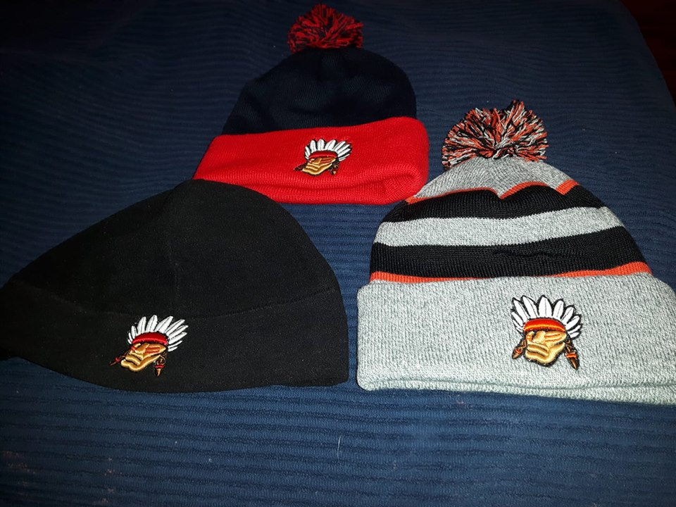
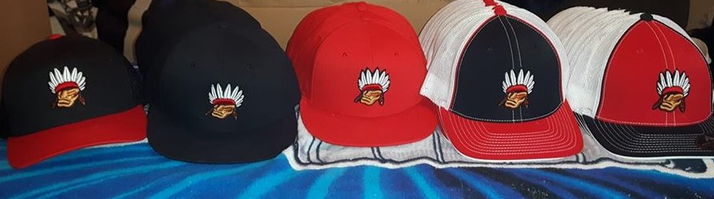

Big Guy Lake Sports was formed back in 2005 when a group of individuals seen a need to have First Nation teams from Prince George compete in competetive tournaments across Western Canada. Over the years the team has sent local atheletes to some of the best hockey and fastball tournaments across Western Canada including:
Big Guy Lake Sports understands the importance of having teams attending the tournaments. The communities come together in fundraising to get the teams to the event, the players train and practice to be prepared to battle other athelets from across Canada and the youth in each community want to get involved in a sport for a chance to attend the tournaments. When your child joins a team it gets them atcive, teaches the youth problem solving, teamwork and community spirit. Big Guy Lake has sponsored youth teams in hockey and sent a Jr Men's to the Canadian Native Fastball Championships including the Blazers winning in 2016.

